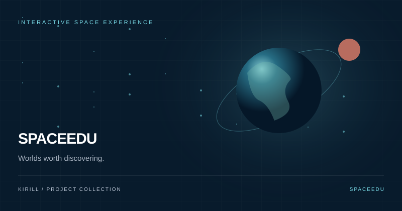

INTERACTIVE SPACE EXPERIENCE
SpaceEdu
A cinematic space education concept with planetary video backgrounds, instant world switching and an interactive observatory. Explore orbital motion, compare planets and complete a knowledge challenge.
- Earth, Venus and Mars switcher
- Interactive orbital simulation
- Planet comparison and quiz